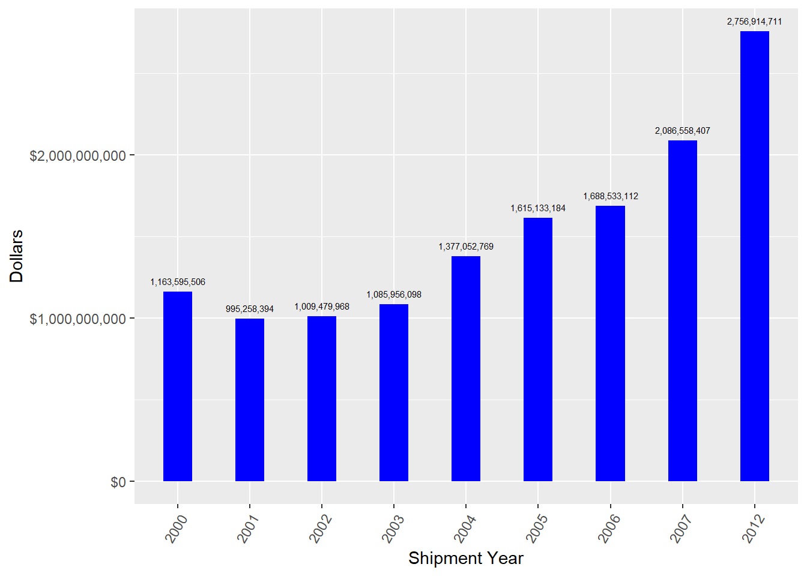

Chapter 5 Explore other topics
5.1 Total import (US dollars) by taxa
total_bytaxa<- data %>% group_by(taxa) %>%
filter(!is.na(value)) %>%
summarise(value=sum(as.numeric(value))) %>%
arrange(desc(value))
DT::datatable(total_bytaxa) %>%
formatCurrency('value',currency = "", interval = 3, mark = ",")ggplot(total_bytaxa, aes(x = reorder(taxa, -value), y=value)) +
geom_bar(stat = "identity", width=0.4,
position = position_dodge(width=0.5), fill="blue") +
scale_y_continuous(labels = scales::dollar_format(prefix="$")) +
geom_text(aes(label = scales::comma(value)), vjust=-1, size=2) +
labs(y = "Value", x="Taxa") + ggtitle("Total import by taxa") +
theme(axis.text.x = element_text(hjust=1, angle=60)) 5.2 Average import by taxa (for those with number and kg units)
average_bytaxa<- data %>%
filter(unit=="Number"| unit=="Kilograms") %>%
group_by(taxa, unit) %>%
filter(!is.na(value)) %>%
summarise(import_mean=round(mean(as.numeric(value)),2),
import_median = round(median(as.numeric(value)),2)) %>%
arrange(desc(import_median))
DT::datatable(average_bytaxa) %>%
formatCurrency('import_median',currency = "", interval = 3, mark = ",")ggplot(average_bytaxa[average_bytaxa$unit== "Number", ],
aes(x = reorder(taxa, -import_median), y=import_median)) +
geom_bar(stat = "identity", width=0.4,
position = position_dodge(width=0.5), fill="blue") +
scale_y_continuous(labels = scales::dollar_format(prefix="$")) +
geom_text(aes(label = scales::comma(import_median)), vjust=-1, size=2) +
labs(y = "Average import", x="Taxa") +
ggtitle("Average import by taxa (Items measured by numbers)") +
theme(axis.text.x = element_text(hjust=1, angle=60)) 
ggplot(average_bytaxa[average_bytaxa$unit== "Kilograms", ],
aes(x = reorder(taxa, -import_median), y=import_median)) +
geom_bar(stat = "identity", width=0.4,
position = position_dodge(width=0.5), fill="blue") +
scale_y_continuous(labels = scales::dollar_format(prefix="$")) +
geom_text(aes(label = scales::comma(import_median)), vjust=-1, size=2) +
labs(y = "Average import", x="Taxa") +
ggtitle("Average import by taxa (Items measured by Kilograms)") +
theme(axis.text.x = element_text(hjust=1, angle=60)) 5.3 Total import (US dollars) by description
value_bydescription<- data %>% group_by(description) %>%
filter(!is.na(value)) %>%
summarise(value=sum(as.numeric(value))) %>%
arrange(desc(value))
DT::datatable(value_bydescription) %>%
formatCurrency('value',currency = "", interval = 3, mark = ",")value_bydescription %>% top_n(15) %>%
ggplot(aes(x = reorder(description, -value), y=value)) +
geom_bar(stat = "identity", width=0.4, position = position_dodge(width=0.5),
fill="blue") +
scale_y_continuous(labels = scales::dollar_format(prefix="$")) +
geom_text(aes(label = scales::comma(value)), vjust=-1, size=2) +
labs(y = "Value", x="Description") +
theme(axis.text.x = element_text(hjust=1, angle=60)) ## Selecting by value
5.4 Average import by description (for those with number and kg units)
average_bydescription<- data %>%
filter(unit=="Number"| unit=="Kilograms") %>%
group_by(description, unit) %>%
filter(!is.na(value)) %>%
summarise(import_mean=round(mean(as.numeric(value)),2),
import_median = round(median(as.numeric(value)),2)) %>%
arrange(desc(import_median))
DT::datatable(average_bydescription) %>%
formatCurrency('import_median',currency = "", interval = 3, mark = ",")average_bydescription[average_bydescription$unit== "Number", ]%>%
ungroup() %>%
top_n(15, wt=import_median) %>%
ggplot(aes(x = reorder(description, -import_median), y=import_median)) +
geom_bar(stat = "identity", width=0.4,
position = position_dodge(width=0.5), fill="blue") +
scale_y_continuous(labels = scales::dollar_format(prefix="$")) +
geom_text(aes(label = scales::comma(import_median)), vjust=-1, size=2) +
labs(y = "Average import", x="description") +
ggtitle("Average import by description (Items measured by numbers)") +
theme(axis.text.x = element_text(hjust=1, angle=60)) 
average_bydescription[average_bydescription$unit== "Kilograms", ]%>%
ungroup() %>%
top_n(15) %>%
ggplot(aes(x = reorder(description, -import_median), y=import_median)) +
geom_bar(stat = "identity", width=0.4,
position = position_dodge(width=0.5), fill="blue") +
scale_y_continuous(labels = scales::dollar_format(prefix="$")) +
geom_text(aes(label = scales::comma(import_median)), vjust=-1, size=2) +
labs(y = "Average import", x="description") +
ggtitle("Average import by description (Items measured by Kilograms)") +
theme(axis.text.x = element_text(hjust=1, angle=60)) ## Selecting by import_median